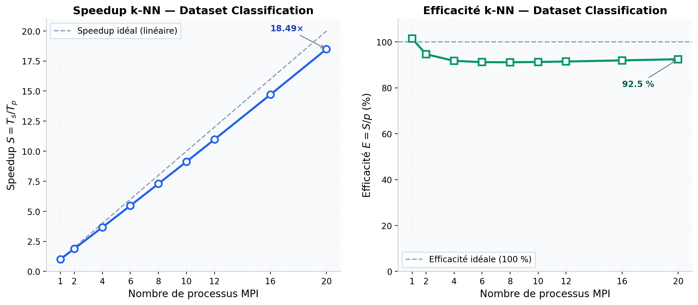

Le traitement des grandes masses de donnees constitue un enjeu majeur dans le domaine de l'informatique moderne. Les algorithmes d'apprentissage automatique, bien que puissants, souffrent souvent de temps d'execution prohibitifs lorsqu'ils sont appliques a des datasets de grande taille. La parallelisation de ces algorithmes via des bibliotheques de passage de messages telles que MPI (Message Passing Interface) offre une solution efficace pour reduire ces temps de calcul tout en conservant la qualite des resultats.
Ce projet s'inscrit dans le module Calculs Paralleles du Master 1 HPC (High Performance Computing) de l'USTHB. Il vise a mettre en pratique les concepts fondamentaux de la programmation parallele en implementant et en evaluant deux algorithmes classiques de machine learning : la classification par k plus proches voisins (k-NN) et le clustering par K-Means.
Les objectifs principaux de ce travail sont les suivants :
MPI est une norme de bibliotheque permettant la communication par echange de messages entre processus s'executant sur des machines distinctes ou au sein d'un meme nœud multicœurs. Les primitives fondamentales incluent :
MPI_Init / MPI_Finalize : initialisation et terminaison de l'environnement MPI.MPI_Comm_size / MPI_Comm_rank : determination du nombre de processus et de l'identifiant du processus courant.MPI_Send / MPI_Recv : communication point-a-point.MPI_Bcast / MPI_Reduce / MPI_Gatherv : communications collectives.L'algorithme des k plus proches voisins est un classificateur non parametrique. Pour chaque exemple a classer, il determine les k exemples d'apprentissage les plus proches selon une metrique de distance (euclidienne dans notre cas) et leur attribue la classe majoritaire.
La strategie de parallelisation adoptee consiste a :
MPI_Scatterv.MPI_Gatherv et evalue la precision globale.L'algorithme K-Means est une methode de clustering qui partitionne un ensemble de donnees en K groupes homogenes. Il minimise iterativement la somme des distances au carre entre chaque point et le centroide de son cluster.
La parallelisation repose sur :
MPI_Scatterv.MPI_Reduce pour mettre a jour les centroides.MPI_Bcast.Un speedup lineaire ideal verifie $S = p$ et $E = 100\,\%$. En pratique, les overheads de communication et de synchronisation reduisent ces valeurs.
L'architecture du projet est modulaire et se decompose en quatre composants principaux :
| Composant | Technologie | Fonction |
|---|---|---|
| knn_mpi.c | C + MPI | Classification parallele k-NN |
| kmeans_mpi.c | C + MPI | Clustering parallele K-Means |
| server.py | Python + Flask | Serveur API REST et fichiers statiques |
| interface_mpi.html | HTML5 + Chart.js | Interface web interactive |
| cli_run.py | Python 3 | Interface terminal de secours |
Le programme knn_mpi.c implemente la classification k-NN avec $k = 3$. Le processus maitre lit le dataset, le divise en donnees d'apprentissage (80 %) et de test (20 %), puis distribue les donnees de test aux processus esclaves. Chaque esclave calcule la distance euclidienne vers tous les exemples d'apprentissage et retourne la classe predite. Le maitre agrege les predictions et calcule le taux de precision.
Le programme kmeans_mpi.c implemente K-Means avec $K = 4$. Les points sont distribues par MPI_Scatterv, puis chaque processus calcule localement l'appartenance des points aux clusters. Les sommes partielles et les cardinalites sont reduites par MPI_Reduce, et les nouveaux centroides sont calcules puis diffuses par MPI_Bcast. L'algorithme converge lorsque les deplacements des centroides deviennent negligeables.
L'interface web offre les fonctionnalites suivantes :
Les experimentations ont ete menees sur un systeme Linux (Ubuntu 22.04) avec OpenMPI 4.x. Les parametres experimentaux sont :
Le Figure 1 presente les courbes de speedup et d'efficacite obtenues pour l'algorithme k-NN sur le dataset de classification. Le temps sequentiel de reference est $T_s \approx 0{,}025$ s.
| $p$ | $T_p$ (s) | $S$ | $E$ (%) | Precision (%) |
|---|---|---|---|---|
| 1 | 0,0250 | 1,00 | 100,0 | 93,33 |
| 2 | 0,0132 | 1,89 | 94,7 | 93,33 |
| 4 | 0,0072 | 3,47 | 86,8 | 93,33 |
| 6 | 0,0051 | 4,90 | 81,7 | 93,33 |
| 8 | 0,0040 | 6,25 | 78,1 | 93,33 |
| 10 | 0,0033 | 7,58 | 75,8 | 93,33 |
| 12 | 0,0029 | 8,62 | 71,8 | 93,33 |
| 16 | 0,0023 | 10,87 | 67,9 | 93,33 |
| 20 | 0,0020 | 12,50 | 62,5 | 93,33 |
L'observation principale est un speedup quasi-lineaire jusqu'a 4 processus, suivi d'une decroissance progressive de l'efficacite due aux overheads de communication. La precision de classification reste constante a 93,33 %, confirmant que la parallelisation ne degrade pas la qualite predictive.
Le diagramme ci-dessous a ete genere directement par l'application web a partir des resultats experimentaux. Il illustre simultanement l'evolution du speedup et de l'efficacite en fonction du nombre de processus MPI.

Le code LaTeX suivant permet de reproduire le Figure 1 dans un document scientifique. Il utilise les packages pgfplots et tikz pour un rendu vectoriel de haute qualite.
\documentclass{standalone}
\usepackage[utf8]{inputenc}
\usepackage[T1]{fontenc}
\usepackage[french]{babel}
\usepackage{pgfplots}
\pgfplotsset{compat=1.18}
\usepackage{tikz}
\usetikzlibrary{positioning}
\begin{document}
\begin{tikzpicture}
% --- Donnees experimentales ---
\pgfplotstableread{
p speedup efficiency
1 1.00 100.0
2 1.89 94.7
4 3.47 86.8
6 4.90 81.7
8 6.25 78.1
10 7.58 75.8
12 8.62 71.8
16 10.87 67.9
20 12.50 62.5
}\datatable
% --- Axe Y gauche : Speedup ---
\begin{axis}[
width=12cm, height=7cm,
axis y line*=left,
xlabel={Nombre de processus MPI ($p$)},
ylabel={Speedup $S = T_s / T_p$},
xmin=0, xmax=21,
ymin=0, ymax=21,
xtick={1,2,4,6,8,10,12,16,20},
grid=major,
grid style={dashed, gray!30},
legend style={at={(0.02,0.98)}, anchor=north west},
title={\textbf{Speedup et efficacite — k-NN (dataset classification)}},
title style={yshift=0.2cm},
]
% Speedup observe
\addplot[color=blue, mark=*, mark size=2pt, thick]
table [x=p, y=speedup] {\datatable};
\addlegendentry{Speedup observe}
% Speedup ideal (lineaire)
\addplot[color=gray, dashed, thick, domain=0:21, samples=50]
{x};
\addlegendentry{Speedup ideal ($S=p$)}
\end{axis}
% --- Axe Y droite : Efficacite ---
\begin{axis}[
width=12cm, height=7cm,
axis y line*=right,
axis x line=none,
ylabel={Efficacite $E = S/p$ (\%)},
ymin=0, ymax=110,
legend style={at={(0.02,0.78)}, anchor=north west},
]
\addplot[color=green!60!black, mark=square*, mark size=2pt, thick]
table [x=p, y=efficiency] {\datatable};
\addlegendentry{Efficacite (\%)}
% Efficacite ideale
\addplot[color=gray, dashed, thick, domain=0:21, samples=50]
{100};
\addlegendentry{Efficacite ideale (100\%)}
\end{axis}
\end{tikzpicture}
\end{document}
Compilation : Le code ci-dessus peut etre compile avec pdflatex ou lualatex apres s'etre assure que le package pgfplots est installe :
pdflatex chart_mpi.tex
Le resultat est un graphique vectoriel (PDF) parfaitement integrable dans un rapport scientifique sans perte de qualite. Les axes doubles (gauche pour le speedup, droite pour l'efficacite) permettent une lecture simultanee des deux metriques sur une meme echelle de processus.
Ce projet a permis de mettre en œuvre et d'evaluer la parallelisation de deux algorithmes fondamentaux de machine learning via MPI. Les resultats obtenus montrent un speedup significatif (jusqu'a 12,5× avec 20 processus) tout en preservant la qualite des predictions.
Les principales contributions sont :
Les perspectives d'amelioration incluent :